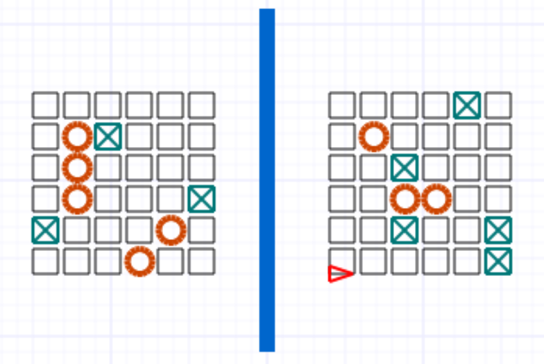

Exercice noté 4: Jeu graphique
Dans cet exercice, tu seras amené à écrire un programme graphique interactif en Python à l'aide du module Turtle (Tortue).
Le programme consiste à programmer une version simplifiée du jeu Touché-coulé (bataille navale).
Règles du jeu
| A | B | C | D | E | F | |
|---|---|---|---|---|---|---|
| 1 | A1 | B1 | C1 | D1 | E1 | F1 |
| 2 | A2 | B2 | C2 | D2 | E2 | F2 |
| 3 | A3 | B3 | C3 | D3 | E3 | F3 |
| 4 | A4 | B4 | C4 | D4 | E4 | F4 |
| 5 | A5 | B5 | C5 | D5 | E5 | F5 |
| 6 | A6 | B6 | C6 | D6 | E6 | F6 |
Instructions
Modifie et complète le programme touche_coule.py afin de jouer au jeu Touché-coulé décrit plus haut.
Le programme aura une composante graphique (Tortue) montrant l'état du jeu et une composante interactive en console pour faire l'entrée des coordonnées d'une case.
Début d'une partie:
Le programme répartit aléatoirement les bateaux de chaque joueur dans leur grille respective et dessine les grilles (vides).
Une fois l'initialisation terminée, le programme demande au joueur 1 les coordonnées de la case visée (dans la console).
Déroulement d'une partie:
Les joueurs entrent en alternance une coordonnée jusqu'à ce l'un trouve tous les bateaux de l'autre.
Si un joueur entre une coordonnée non valide (ne correspond pas à une case), le programme lui demande d'entrer une nouvelle coordonnée.
Si la coordonnée (valide) correspond à un bateau, le programme affiche (en console) Touché!, sinon il affiche Raté!.
Après chaque coordonnée entrée, les grilles (graphique) sont mises à jour, en indiquant les cases ratées et les cases touchées.
Fin d'une partie:
Lorsqu'un des joueurs trouve tous les bateaux de l'autre joueur, la partie est terminée. Le programme indique alors le gagnant de la partie.
Illustration du jeu
-
Début d'une partie
TOUCHÉ-COULÉ Joueur 1:
-
En cours de jeu

... Joueur 1: D4 Touché! Joueur 2: C2 Raté! Joueur 1: E5 Raté! ...
-
Fin de partie
... Joueur 1: E1 Raté! Joueur 2: E5 Touché! JOUEUR 2 a gagné!
Spécification
Le programme doit respecter le plus fidèlement possible l'illustration plus haut.
- La grille est (initialement) composéd de carré mesurant 16 pixels de coté et espacée de 4 pixels
- Une case non visitée est un carré vide de bordure de couleur noire
- Une case ratée a une bordure de 2 pixels de couleur verte et une croix de couleur verte
- Une case trouvée est un cercle de rayon 8 pixels, de bordure de 4 pixels et de couleur rouge
- La barre séparant les deux grilles a une épaisseur de 10 pixels et est de couleur bleue
Remets le script Python touche_coule_[matricule].py contenant tout le programme sur StudiUM.